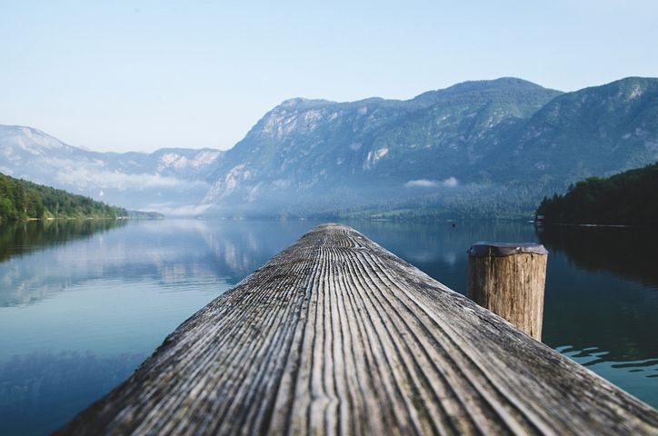

The Alps are the highest and most extensive mountain range system that lies entirely in Europe, and stretch approximately 1,200 kilometres (750 mi) across eight Alpine countries (from west to east): France, Switzerland, Monaco, Italy, Liechtenstein, Austria, Germany, and Slovenia. The mountains were formed over tens of millions of years as the African and Eurasian tectonic plates collided. Extreme shortening caused by the event resulted in marine sedimentary rocks rising by thrusting and folding into high mountain peaks such as Mont Blanc and the Matterhorn. Mont Blanc spans the French–Italian border, and at 4,809 m (15,778 ft) is the highest mountain in the Alps. The Alpine region area contains about a hundred peaks higher than 4,000 metres (13,000 ft). The altitude and size of the range affects the climate in Europe; in the mountains precipitation levels vary greatly and climatic conditions consist of distinct zones. Wildlife such as ibex live in the higher peaks to elevations of 3,400 m (11,155 ft), and plants such as Edelweiss grow in rocky areas in lower elevations as well as in higher elevations. Evidence of human habitation in the Alps goes back to the Palaeolithic era. A mummified man, determined to be 5,000 years old, was discovered on a glacier at the Austrian–Italian border in 1991. By the 6th century BC, the Celtic La Tène culture was well established. Hannibal famously crossed the Alps with a herd of elephants, and the Romans had settlements in the region. In 1800, Napoleon crossed one of the mountain passes with an army of 40,000. The 18th and 19th centuries saw an influx of naturalists, writers, and artists, in particular, the Romantics, followed by the golden age of alpinism as mountaineers began to ascend the peaks.
The Alpine region has a strong cultural identity. The traditional culture of farming, cheesemaking and woodworking still exists in Alpine villages, although the tourist industry began to grow early in the 20th century and expanded greatly after World War II to become the dominant industry by the end of the century. The Winter Olympic Games have been hosted in the Swiss, French, Italian, Austrian and German Alps. The region is serviced by 4,200 km of roads used by six million vehicles per year which is aided by the multiple trains that are well established in the Alps. At present, the region is home to 14 million people and has 120 million annual visitors.
History, Geography and Climate
About 10,000 years ago, when the ice melted after the Würm glaciation, late Palaeolithic communities were established along the lake shores and in cave systems. Evidence of human habitation has been found in caves near Vercors, close to Grenoble; in Austria the Mondsee culture shows evidence of houses built on piles to keep them dry. Standing stones have been found in Alpine areas of France and Italy. The Rock Drawings in Valcamonica are more than 5000 years old; more than 200,000 drawings and etchings have been identified at the site.

The Alps are a crescent shaped geographic feature of central Europe that ranges in an 800 km (500 mi) arc (straight line) from east to west and is 200 km (120 mi) in width. The mean height of the mountain peaks is 2.5 km (1.6 mi). The range stretches from the Mediterranean Sea north above the Po basin, extending through France from Grenoble, and stretching eastward through mid and southern Switzerland. The range continues onward toward Vienna, Austria, and east to the Adriatic Sea and Slovenia. To the south it dips into northern Italy and to the north extends to the southern border of Bavaria in Germany. In areas like Chiasso, Switzerland, and Allgäu, Bavaria, the demarcation between the mountain range and the flatlands are clear; in other places such as Geneva, the demarcation is less clear. The countries with the greatest alpine territory are Austria , Italy, France and Switzerland. The highest portion of the range is divided by the glacial trough of the Rhône valley, from Mont Blanc to the Matterhorn and Monte Rosa on the southern side, and the Bernese Alps on the northern. The peaks in the easterly portion of the range, in Austria and Slovenia, are smaller than those in the central and western portions. The variances in nomenclature in the region spanned by the Alps makes classification of the mountains and subregions difficult, but a general classification is that of the Eastern Alps and Western Alps with the divide between the two occurring in eastern Switzerland according to geologist Stefan Schmid, near the Splügen Pass. The highest peaks of the Western Alps and Eastern Alps, respectively, are Mont Blanc, at 4,810 m and Piz Bernina at 4,049 metres. The second-highest major peaks are Monte Rosa at 4,634 m and Ortler at 3,905 m, respectively.
In 1991 a mummy of a neolithic body, known as Ötzi the Iceman, was discovered by hikers on the Similaun glacier. His clothing and gear indicate that he lived in an alpine farming community, while the location and manner of his death – an arrowhead was discovered in his shoulder – suggests he was travelling from one place to another.Analysis of the mitochondrial DNA of Ötzi, has shown that he belongs to the K1 subclade which cannot be categorized into any of the three modern branches of that subclade. The new subclade has provisionally been named K1ö for Ötzi. Celtic tribes settled in Switzerland between 1500 and 1000 BC. The Raetians lived in the eastern regions, while the west was occupied by the Helvetii and the Allobrogi settled in the Rhône valley and in Savoy. The Ligurians and Adriatic Veneti lived in north-west Italy and Triveneto respectively. Among the many substances Celtic tribes mined was salt in areas such as Salzburg in Austria where evidence of the Hallstatt culture was found by a mine manager in the 19th century. By the 6th century BC the La Tène culture was well established in the region, and became known for high quality decorated weapons and jewellery. The Celts were the most widespread of the mountain tribes—they had warriors that were strong, tall and fair skinned, and skilled with iron weapons, which gave them an advantage in warfare
The Alps are a classic example of what happens when a temperate area at lower altitude gives way to higher-elevation terrain. Elevations around the world that have cold climates similar to those of the polar regions have been called Alpine. A rise from sea level into the upper regions of the atmosphere causes the temperature to decrease. The effect of mountain chains on prevailing winds is to carry warm air belonging to the lower region into an upper zone, where it expands in volume at the cost of a proportionate loss of temperature, often accompanied by precipitation in the form of snow or rain. The height of the Alps is sufficient to divide the weather patterns in Europe into a wet north and a dry south because moisture is sucked from the air as it flows over the high peaks.The severe weather in the Alps has been studied since the 18th century; particularly the weather patterns such as the seasonal foehn wind. Numerous weather stations were placed in the mountains early in the early 20th century, providing continuous data for climatologists. Some of the valleys are quite arid such as the Aosta valley in Italy, the Maurienne in France, the Valais in Switzerland, and northern Tyrol. During winter the avarage temperature will be about -5° to 4° C but during the summer it will be about 8° C. So remember to bring a jacket.
Tourism and Travel
The Alps are one of the more popular tourist destinations in the world with many resorts such Oberstdorf, in Bavaria, Saalbach in Austria, Davos in Switzerland, Chamonix in France, and Cortina d'Ampezzo in Italy recording more than a million annual visitors. With over 120 million visitors a year, tourism is integral to the Alpine economy with much it coming from winter sports, although summer visitors are also an important component. Touch down in any buzzing Alpine city and you’ll be surrounded by snowcapped Alps, teeny villages, and bucolic landscapes spreading out into the horizon. From lakeside in Lugano to the sky-high mountain air above Austria, Switzerland, and Germany, be sure to pack both your shades and your scarf. Lugano, a large summer holiday town, is the best of both worlds. Sit lakeside at Restaurant Seven Lugano, and then inspire your nose on the two-mile Olive Tree Trail at Monte Arbostora, San Grato’s botanical park. Bask in St. Moritz’ mineral springs after a long day hiking glacier territory. In Ötztal, raft the rivers, rock climb, or stand on the Wildspitze glacier to be on top of Tirol, near the Italian border. Climb up to the top of Zugspitze in Garmisch-Partenkirchen, or finish on a high note in the Alps’ largest nature reserve, National Park Hohe Tauern. Whether you’re a white-knuckled thrill-seeker or a calm and mellow explorer, the Alps have you covered. Zip down the Autobahn in a shiny Porsche, go whitewater rafting in the Tirolean Alps, or relax into a flight of rare gins at a rustic distillery. In the mountains, you set the pace. Visit the Interlaken-Jungfrau Region and hike to the Kleine Scheidegg for fantastic views of the famous mountain trio Eiger, Mönch, and Jungfrau. Mix it up back in Lucerne, hopping on the world’s steepest cog railway — a 48-percent gradient. Keep the adrenaline going in Ötztal’s Area 47, a theme park where you can cliff dive, wakeboard, zipline, and more.
The tourism industry began in the early 19th century when foreigners visited the Alps, travelled to the bases of the mountains to enjoy the scenery, and stayed at the spa-resorts. Large hotels were built during the Belle Époque; cog-railways, built early in the 20th century, brought tourists to ever higher elevations, with the Jungfraubahn terminating at the Jungfraujoch, well above the eternal snow-line, after going through a tunnel in Eiger. During this period winter sports were slowly introduced and in 1882 the first figure skating championship was held in St. Moritz. Downhill skiing became a popular sport with English visitors early in the 20th century, as the first ski-lift was installed in 1908 above Grindelwald. with the hundreds of fantastic activities you can take part in in this wondrous mountain region it is no surprise that tourist flock here.